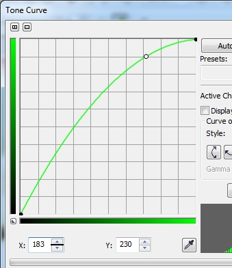

Улучшение фото в Corel Photo-Paint
В данном уроке я хочу рассказать об одном из способов коррекции изображений в Corel Photo-Paint. Данный способ не является каким-то ноу-хау, но тем не менее, возможно кому-то пригодится в работе. Этот урок больше рассчитан для тех, кто хочет самостоятельно, безо всяких «профессиональных заморочек и тонкостей» достаточно быстро улучшить семейные или личные любительские фотографии, которые часто не блещут качеством. Я думаю, что профессионалы в коррекции, нашли бы 1000 + 1 недостаток в этом примере, но здесь не преследуется цель сделать суперидельный снимок (на это нужно должное количество времени и терпения). В уроке показана методика данного способа коррекции и тот инструментарий, который используется в подобных случаях. А для получения лучших результатов, просто необходимо соблюсти большую точность в настройках и подборе параметров, вот и всё.
Итак, приступим…
На рис. 1 показан исходный снимок.
Данный рисунок является копией оригинала, уменьшенной в 2 раза. Далее мы будем работать с этой уменьшенной версией оригинала, хотя вы можете взять для упражнения оригинал, который находится в прикрепленных файлах.
Будем честными – это не самый худший оригинал, который доводится встречать. Я бы сказал, это чуть ли не идеальный случай, потому что в основном фото не имеет значительных дефектов и не изобилует артефактами, которые значительно усложняют коррекцию. Цвета также не имеют катастрофических отклонений от желаемых.
Но давайте присмотримся к этой фотографии… Обратите внимание на лоб девочки. Он какого-то «земляного» цвета, такой-же оттенок местами присутствует на щечках. Кроме того, мы не знаем настоящего цвета куртки и шапочки, цвет которых неминуемо пострадает при коррекции. Но на мой взгляд, это не то, чем нельзя было бы пожертвовать. Ведь фото сделано крупным планом и все внимание сосредотачивается на лице и это естественно. Врядли при просмотре фотографии своего ребенка, например, лет через 10, вам будет слишком важно, какого оттенка была куртка и шапочка. Поэтому в этом уроке мы сосредоточимся именно на лице.
Определимся сначала с самой светлой значимой частью лица. Это место чуть выше румянца на щеках и ниже тени под глазами. На рис. 2 это место я обвел красным кружком.
Чтобы узнать состояние дел на этом участке лица, откроем докер Info (если он не открыт), нажав Ctrl + F1. Измерим значения R, G и B. Для этого достаточно поводить указателем мыши по интересующим нас участкам лица и посмотреть в докере результат. А результат примерно таков: значения цвета колеблются в пределах от R 199; G 199; B 147 до R 221; G 183; B 172. Эксперты советуют принимать значения цвета для светлой кожи равными R 248; G 230; B 220.
Ну что ж… давайте прислушаемся к их мнению. Но в данном, конкретном случае, я прибегну, к «экстремальной» (и в то же время самой быстрой) коррекции, сейчас увидите сами. Воспользуемся для этого фильтром Tone curve (Цветовая кривая). Для этого выполните команду Adjust > Tone Curve (Настройка > Цветовая кривая).
Далее я пошагово опишу происходящие изменения, чтобы вы могли наглядно видеть, какие происходят изменения при изменении каждого параметра.
В окне фильтра Tone curve (Цветовая кривая), в списке Active Channel (Активный канал), выберите канал Red (Красный) и на кривой установите точку с координатой 221; 221. Во время перемещения указателя мыши вдоль кривой, возле указателя будет виден маленький прямоугольник с текущими координатами указателя, это будет вам подсказкой при установке точки (рис. 3).
В счетчиках Х: и Y: также автоматически установятся значения Х 221 и Y 221. Измените значение в счетчике Y: на 248. Далее я буду показывать, как и обещал пошаговые изменения, вы же можете изменить значения для всех каналов и потом нажать кнопку ОК. Я же, в этом уроке после каждого изменения буду нажимать ОК, чтобы вы видели этапы изменения фотографии. Итак, я поменял значение в счетчике Y: на 248, как показано на рис. 4.
На рис. 4, я специально обвел счетчик Y: и подчеркнул список Active Channel (Активный канал).
Результат применения этого изменения показан на рис. 5.
Теперь проделаем аналогичные действия с зеленым каналом. На этот раз в списке Active Channel (Активный канал) выберем Green (Зеленый) и установим на кривой точку с координатами 183. В счетчике Y: изменим значение на 230 (рис. 6). Щелкнем ОК.

На рис. 7. показано, как изменилась фотография.
Теперь закончим наши изменения, исправлением синего канала. В списке Active Channel (Активный канал) выберем Blue (Синий) и установим на кривой точку с координатами 172. В счетчике Y: изменим значение на 220 (рис. 8). Щелкнем ОК.
Результат показан на рис. 9.
Фотография значительно посветлела и приобрела более «живой» вид. Однако несколько снизился контраст и самое главное, что цвет кожи стал бледноватым. Нельзя сказать, что все получилось совсем плохо, но нам больше по душе, когда цвет кожи не такой бледный, а то такое впечатление, как будто у ребенка «малокровие». Давайте исправим эту ситуацию. Т. к. общий контраст меня не сильно беспокоит, я сосредоточусь на лице. Тут даже дело не столько в контрасте, сколько в бледности кожи. Я хочу немного подкорректировать оттенок. В Corel Photo-Paint этим «вопросом заведует» фильтр Selective Color (Селективный цвет). Выполните команду Adjust > Selective Color (Настройка > Селективный цвет).
Но давайте сначала определимся, что мы собираемся изменить. Я бы хотел придать коже более розовый цвет, точнее сделать кожу чуточку темнее и румяней. Это означает, что нам необходимо немного добавить красного цвета. Т. к. в этом фильтре можно настраивать значения цветов CMYK (синий, пурпурный, желтый и черный) для определенного цвета в вашем изображении, даже если изображение в цветовой модели RGB, то вспомним, что красный цвет получается смешением желтого и пурпурного. Из этого следует, что нам надо увеличить количество этих цветов.
Настройки фильтра показаны на рис. 10.
Обратите внимание, что в области Color Spectrum (Цветовой спектр), переключатель установлен на Reds (Красные), а в области Adjustment percentage (Процент настройки) на Absolute (Абсолютный). При использовании фильтра с установленным переключателем Absolute (Абсолютный), нужно устанавливать значения «с осторожностью», потому что даже небольшие изменения значений приводят к значительным изменениям в изображении.
После установки нужных значений, щелкните ОК. Результат показан на рис. 11.
Заметьте, что также изменился оттенок шапочки и шарфика. Сравнивая одежду на рис. 1 и рис. 11, можно увидеть разницу. На рис. 1 одежда была более темной (т. к. само фото было темнее), но на мой взгляд это было даже лучше, т. к. она выглядела более контрастной и цвет был более насыщенным. На рис. 12 я обвел красным «проблемные», на мой взгляд, места (слева показано исходное изображение).
Т. к. для получения рис. 12, я уменьшил размеры изображений на 75%, то не очень хорошо видны обведенные места. Но даже и при таком размере видно, что мех и куртка на плечах стали практически белыми, детали в этих местах исчезли, чего не было на исходной фотографии.
Ну что ж, для Photo-Paint и эта задача по зубам.
Но сначала должен оговориться (напомнить), что в ходе наших действий, мы не сохраняли наших изменений. И хорошо, что не сохраняли… Хотя в то же время, никто не отменял старое правило – выполнять работу с дубликатом, а не с оригиналом (правда об этом надо было сказать в начале урока). Итак, раз мы не сохраняли внесенных изменений, можно на этом этапе сделать копию. Выполните команду Image > Duplicate (Изображение > Дублировать). Появится диалоговое окно, показанное на рис. 13.
В данном случае можно согласиться с предложенным Photo-Paint названием файла по умолчанию. Поэтому просто нажмите ОК. Теперь нам надо оригинал вернуть к исходному состоянию. Для этого выполните команду File > Revert to Saved (Файл > Вернуть к сохраненной версии).
Теперь выделим измененное (дублированное) изображение. Нажмите Ctrl + A, чтобы выделить все изображение. Скопируем его в Буфер обмена и перейдем в исходное изображение. Вставьте из Буфера обмена откорректированное изображение.
После этих действий, оригинал ни чем не будет внешне отличаться от откорректированного изображения. Но зато в докере Objects (Объекты) появится новый объект. Воспользуемся возможностями, которые предоставляет нам Photo-Paint, а именно – маской обрезки. Для этого:
1. Нажмите Ctrl + M, чтобы создать из объекта маску.
2. Выполните команду Object > Clip Mask > Create > From Mask (Объект > Маска обрезки > Создать > Из маски).
Докер Objects (Объекты) после выполненных манипуляций, показан на рис. 14.
В докере Objects (Объекты) щелкните мышью на значке «+» между объектом и маской, а потом на самой маске (в виде белого прямоугольника). Активизируйте инструмент Paint (Кисть), нажав горячую клавишу Р. В качестве цвета краски выберите в палитре 30 или 40 % серого. На Панели свойств выберите в раскрывающемся списке Nib shape (Форма кончика) круглую мягкую кисть, размером 50. В счетчике Transparency (Прозрачность) установите значение 70, а в счетчике Feather (Размытие) – значение 0.
Закрасьте те части куртки, мех и шапочку кистью. В процессе «раскраски», вы будете видеть, как эти места куртки становятся темнее, а на меху проявляются детали (рис. 15).
И хотя скриншот сильно уменьшен, видно, что после наших действий, куртка стала темнее. Справа показано плечо и обведено место, которое было до нашей обработки слишком светлым, почти белым. Конечно, степень «восстановления» исходного цвета – дело вкуса. Напомню, лишь, что степень «восстановления» зависит от выбранной вами краски и Прозрачности кисти. Чем темнее краска, тем сильней будет восстанавливаться (проявляться) первоначальный цвет.
После всех действий, если вы удовлетворены результатом, осталось лишь объединить объект с фоном. Для этого щелкните в докере Objects (Объекты) между объектом и маской, чтобы появился между ними значок «+», а потом нажмите комбинацию клавиш Ctrl + стрелка вниз, чтобы объединить его с фоном. Конечный результат показан на рис. 16.
В заключение скажу еще пару замечаний. Во-первых, при подобного рода действиях, нужно определиться, чем при необходимости можно пожертвовать (что часто приходится делать). Во-вторых, действия по повышению контраста и прочие манипуляции – дело вкуса. Когда вы выполняете коррекцию для себя, вы руководствуетесь исключительно своими вкусами, желаниями или «капризами», чего нельзя сказать при выполнении заказа. К чему я это говорю? К тому, что кому-то может показаться конечный результат не очень хорошим, а может и хуже оригинала. Это все понятия относительные. В-третьих, Photo-Paint довольно «зрелая» программа и добиться результата можно разными способами, благо Photo-Paint это позволяет.
Что еще полезного может вынести начинающий пользователь из этого урока? Думаю, вы обратили внимание, что в фильтре Tone curve (Цветовая кривая), корректировались каналы по отдельности, в списке Active Channel (Активный канал) мы выбирали отдельные каналы, а не составной канал RGB. Если бы мы корректировали «общую» кривую, мы бы не смогли добиться того, что у нас получилось. И хотя в результате формы кривых стали практически одинаковыми (рис. 17), это не должно вводить вас в заблуждение.

Чтобы увидеть кривые всех каналов, я установил в окне фильтра флажок Display all channels (Показывать все каналы). Как видно на рисунке, кривая зеленого канал слилась с кривой красного, отчего ее и не видно, а кривая синего канала находится чуть ниже, но на очень маленьком расстоянии. Кривая составного канала, кривая черного цвета, естественно осталась без изменений. К тому же, надо сказать, что это довольно редкий случай, когда так легко удалось достичь нормального результата. В начале урока я сказал, что прибегну к «экстремальной» коррекции. Почему экстремальной? Потому что в большинстве случаев, при установке на кривой всего одной точки и изменении ее координат, результат может быть весьма плачевный. Изображение исказится до неузнаваемости. Кроме этого, далеко не всегда получается использовать стиль кривой – Curve (Кривая), иногда приходится использовать стиль Straight (Прямая).
Однако, несмотря на это, я могу сказать, что придерживаясь такого порядка действий, можно улучшить очень большое количество фотографий, потому что недостатки фотографий, которые были рассмотрены в уроке, не такая уж и редкость в реальной практике. Ну и пожалуй последнее замечание. Иногда такой вариант коррекции может не сработать ко всему изображению. В этом случае, вам невозможно будет обойтись без использования масок, чтобы откорректировать только определенную часть изображения, потому что возможен случай, когда улучшение одной части (фрагмента) изображения, может привести к ухудшению другой.